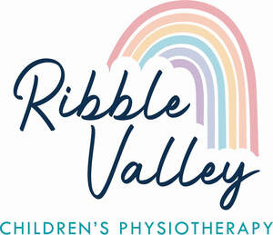

Trade Mark Journal No.2026/009 27 February 2026
UK00004336957 6 February 2026 (10,35,41,44)

- Class 10
- Physiotherapy and rehabilitation equipment; Physiotherapy apparatus; Step-up machines for use in physiotherapy; Treadmills for medical use in physiotherapeutic exercise; Apparatus for physiotherapeutic treatment; Electronic stimulation apparatus for physiotherapy; Orthopaedic splints; Medical devices for moxibustion therapy; Splinting for orthopaedic use; Medical therapy instruments; Insoles [orthopaedic]; Apparatus for medical rehabilitation; Electrotherapy instruments for slimming treatments; Electro-stimulation apparatus for use in therapeutic treatment; Physical therapy equipment; Exercise machines for medical rehabilitative purposes.
- Class 35
- Retail services in relation to physical therapy equipment.
- Class 41
- Aerobics training services; Exercise [fitness] training services; Fitness and exercise training services; Training services relating to orthopaedic medicine; Training services in the field of medical disorders and their treatment; Courses (Training -) relating to medicine; Education services relating to therapeutic treatments; Health club services [exercise].
- Class 44
- Physiotherapy; Physiotherapy services; Physiotherapy [physical therapy]; Electro therapy services for physiotherapy; Occupational therapy and rehabilitation; Medical counselling; Medical services in the field of treatment of chronic pain; Hydrotherapy services; Bodywork therapy; Therapy services; Hydrotherapy; Physical therapy services; Medical treatment services; Reflexology services; Medical clinic services; Clinic (Medical -) services; Clinic services (Medical -); Counselling relating to the psychological treatment of medical ailments; Hydrotherapy home services; Sports massage; Health clinic services [medical]; Massage services; Physical therapy; Therapy (Physical -); Medical treatment services provided by clinics and hospitals; Health counselling; Mobile medical clinic services; Provision of medical treatment; Physical rehabilitation; Ambulant medical care; Reflexology; Acupressure therapy; Counselling relating to occupational therapy; Cupping therapy services; Occupational therapy services; Dietetic counselling services [medical]; Chiropractic services; Therapeutical pilates; Medical counselling services; Occupational therapy; Chiropractic; Osteopathy; Chelation therapy services; Heat therapy [medical]; Cupping therapy; Massage and therapeutic shiatsu massage; Foot massage services; Medical treatment services provided by a health spa; Pregnancy massage services; Acupuncture services; Dental clinic services; Medical spa services; Sports medicine services; Counseling relating to occupational therapy; Health care relating to relaxation therapy; Mobile chiropractic services; Cryotherapy services; Speech therapy services; Drug rehabilitation services; Nursing services (Medical -); Medical analysis services relating to the treatment of patients; Health care relating to therapeutic massage; Animal-assisted therapy; Moxibustion therapy; Residential medical treatment services; Hot stone massage therapy services; Music therapy services; Consultancy services relating to orthopaedic implants; Nutrition counselling; Medical nursing services; Chiropractic services for children.
Ribble Valley Children's Physiotherapy Ltd